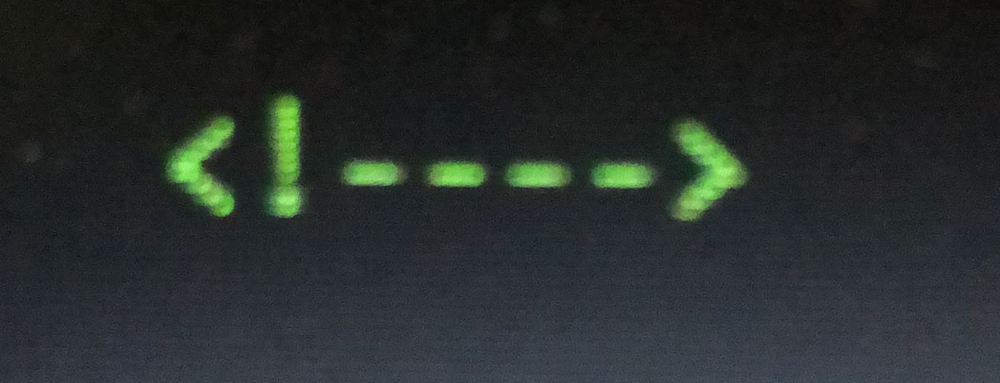

Utilizar comentários enquando desenvolvemos um código é de extrema importancia para que depois de pronto, possamos entender o que foi feito em cada parte do nosso código. Para adcionarmos um comentário em HTML usamos na abertura o simbolo de menor, exclamação e dois hifens. Para fechamento, dois hifens e o simbolo de maior. Conforme ilustado na imagem abaixo:
Após adicionada a tag do comentário, podemos escrever o que quisermos dentro, sem que isso afete o nosso código.